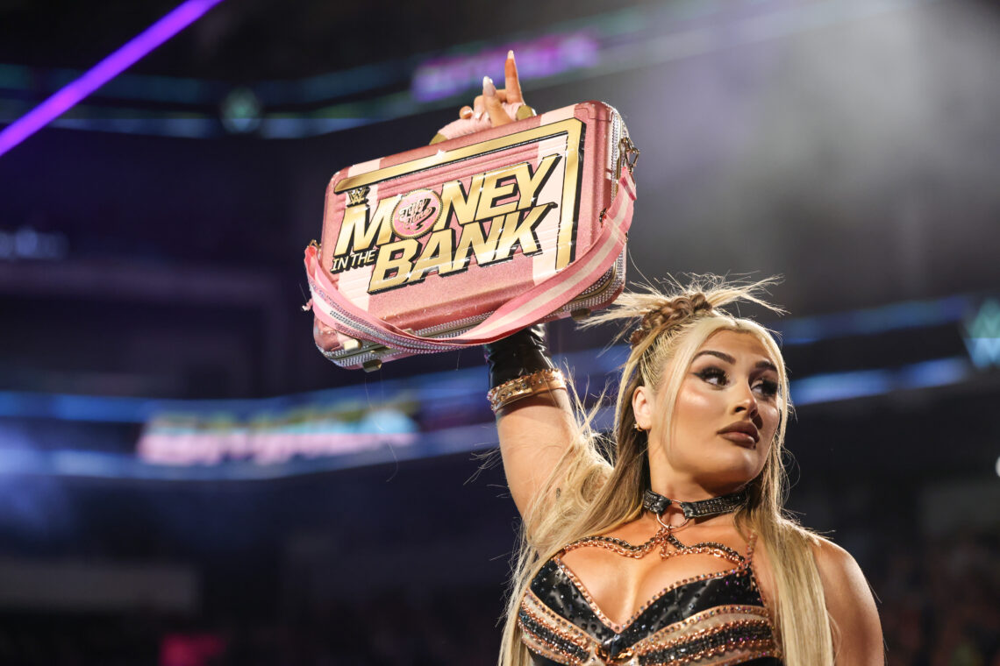
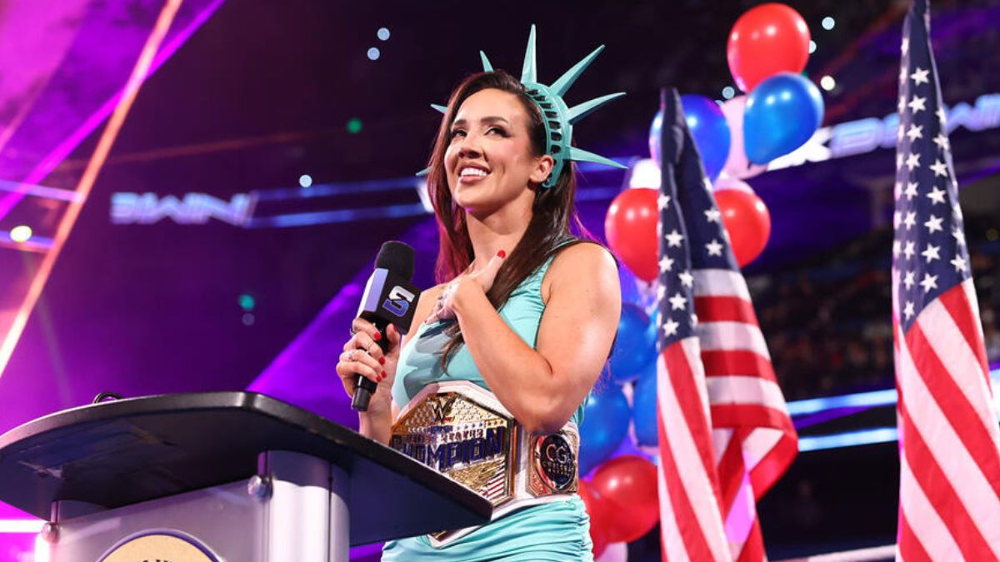
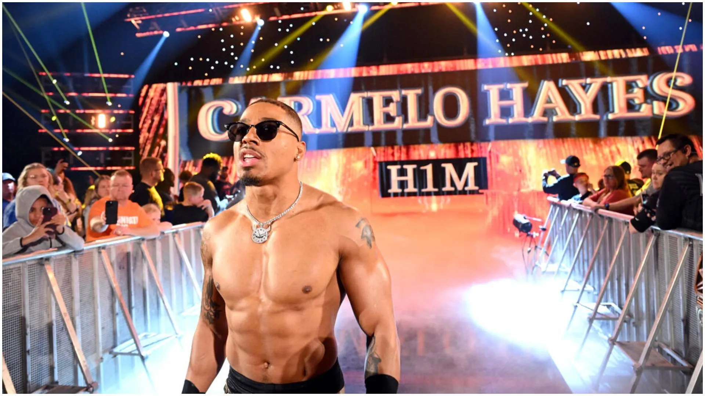

Selamlar, bugünkü Smackdown'ın analizini yapmak istedim tamamen random bir şekilde hemen başlayalım. Öncelikle şov, 6-women tag team maçıyla başladı ki bundan önce gerçekleşen konuşmada Nia Jax'in Bianca'nın Jade Cargill'e saldırmış olabileceğini ima etmesi hikaye işlenişi açısından güzeldi zevk verdi. Bana sorsanız Jade Cargill'e olan saldırı nereye bağlansın sen ne istersin diye, ben Jade Cargill'e Naomi'nin saldırmış olmasını isterim. Bu hikaye Royal Rumble'dan önce ortaya çıkarsa ve Rumble'da nefret dolu bir Bianca Belair & Jade Cargill vs Naomi & Bayley izlersek herkesin bundan zevk alacağına eminim.

Şimdi gelelim şu Miss MITB Tiffany'e, içimden bir ses MITB tamamen boş bir cash-in'e kurban gidecek diyor umarım yanılırım. Nia Jax'e ihanet etti edecek derken saçma sapan senaryolarla yine hiçbir yere bağlanmadan devam ediyor WWE yoluna. Tekrar bana sorduğunuzu varsayıyorum sence MITB nasıl kullanılsın diye. Bence MITB şu ana kadar çoktan kullanılmalıydı tabi ama hâlâ geç değil. Nia Jax'ten olabildiğince hızlı bir şekilde almalı kemeri ve Tiffany'i yaklaşık 1 ay sürecek kısa bir reign içinde görmeliyiz. Devamında ise Charlotte Flair'in geri döneceği söylentilerine dayanaraktan Tiffany vs Flair görmemiz gerektiğini bunun sonucunda ise daha uzun soluklu bir Charlotte Flair reign'i görmemiz gerektiğini savunuyorum.

Braun Strowman ve Austin Theory arasında gerçekleşen maçı hızlıca geçip Chelsea Green'in US Championship kutlamalarına geçmek istiyorum. Öncelikle Chelsea Green ve Piper Niven'ın promolarını dinlemeye katlanamadığımı üzülerek belirtmek istiyorum. Tamamen kişisel sebeplerden ötürü yoksa promolarda başarısız olduklarını söylemek haddime değil zaten. O yüzden şovu izlerken de malesef bu promo kısmını atlamak zorunda kaldım. Chelsea Green'in Özgürlük Heykeli temalı kostümü çok hoştu. Bu kutlamanın duyurulduğu andan itibaren zaten beklendiği üzere(Chelsea bomboş kutlama yapıp gidecek değildi herhalde) konuşma biri tarafından kesilmeliydi ve o biri Michin oldu. Michin'i WWE'ye çok yakıştırıyorum ve US Championship için düzenlenen turnuvada da onu desteklemiştim. Sanırım şu anki hikayede US Championship Chelsea ve Michin arasında ayda 1 el değiştirip duracak. Arada başka isimlerin de katılmasıyla bu hikaye renklenebilir tabi ki.

WWE'de hakkı yenen tag teamlerde bugünkü köşemiz Street Profits'e ayrıldı. Street Profits'in hem bireysel hem de combo move setleri sanırım şu an WWE'de benim izlemekten en zevk aldığım move set olabilir. Emin olmamakla birlikte şu an yazılan hikayede hakları biraz daha verilmeye başlanacak gibi. DIY ile sonraki hafta bir kemer maçına çıkarlar diye tahmin ediyorum. Ben özellikle Angelo Dawkins'in o cüsseden beklenmeyecek kadar atletik hareketler yapmasını keyifle izliyorum ve dolayısıyla şovlarda daha fazla Street Profits görmek istiyorum.

Son olarak bahsetmekten birazcık utandığım bir fanlığım var. Carmelo Hayes(It's H1M). Ben şahsen Carmelo Hayes'in çok yetenekli bir profesyonel güreşçi olduğunu ve kendisine yakın gelecekte bir kemer verileceğini düşünmekteyim. Gerek kestiği promolar gerekse son zamanlarda main event karakterlerin birkaçıyla hikayesi tek gecede belirlenen maçlara seri bir şekilde çıkması WWE tarafının onu test ettiği düşüncesini bende oluşturmakta. Bugün Sami Zayn'le gerçekleştirdiği maçta da ring içi aşırı keyifli bir maç seyrettirdi bize. Carmelo Hayes'e sakatlıksız başarılı bir kariyer dilerim.